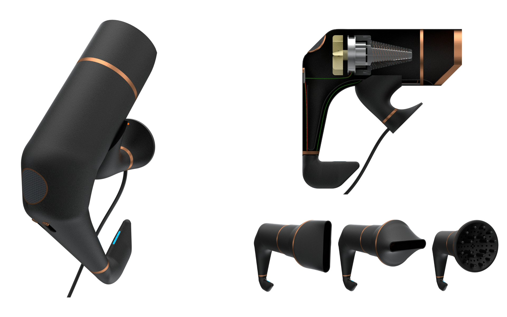
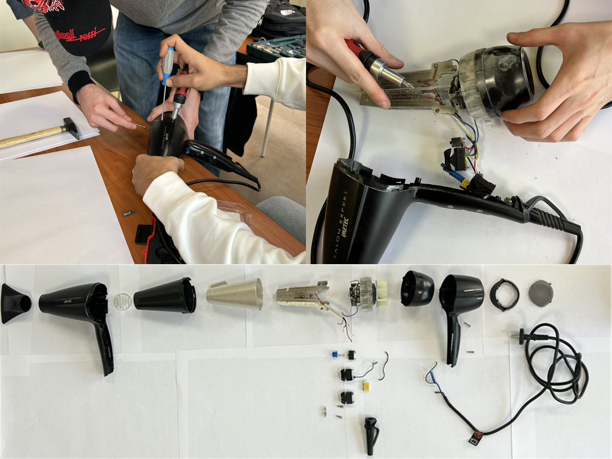
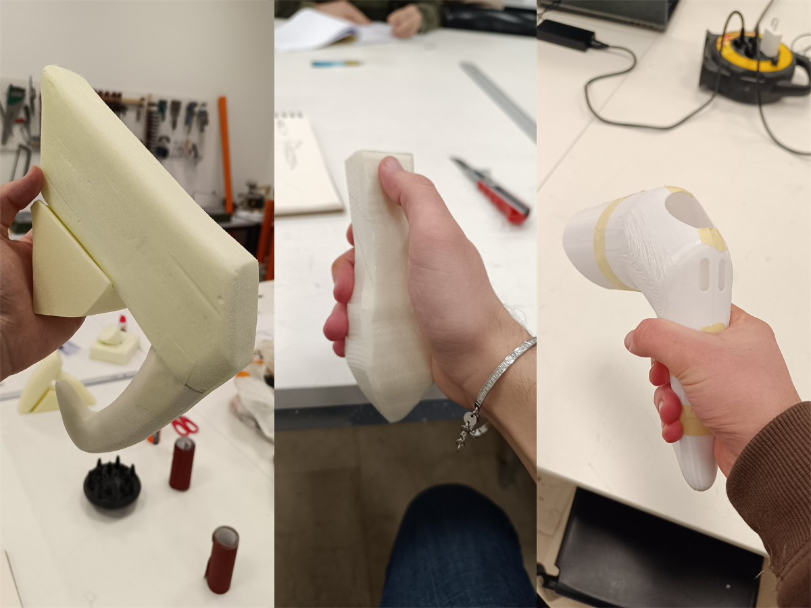
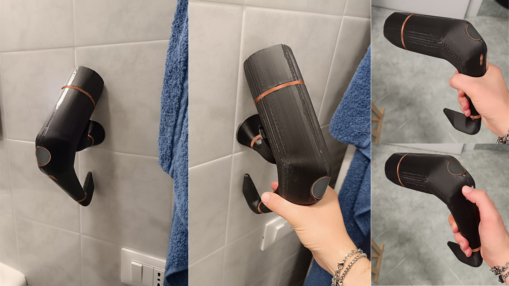

Cupral
Una breve frase che descrive Cupral in una riga. Partendo dal teardown di un prodotto esistente, Cupral ridefinisce l'esperienza di asciugatura. L'estetica premium si fonde con un'architettura interna ottimizzata per garantire un perfetto bilanciamento del peso, ergonomia avanzata e facilità di interazione.

- Tipo
- Progetto di corso
- Anno
- 2024
- Ruolo
- Design e prototipazione
- Strumenti
- Rhino, V-ray, Stampa 3D
Il brief
L'obiettivo era analizzare le criticità di un asciugacapelli standard per progettarne una versione migliorata sotto il profilo ergonomico, meccanico ed estetico. Era fondamentale ridurre l'affaticamento del polso durante l'uso prolungato, ottimizzare la disposizione degli interruttori e conferire al prodotto un aspetto scultoreo e minimale, il tutto rispettando rigidi vincoli di ingombro della componentistica interna.
Il processo
Lo sviluppo è iniziato con il reverse engineering di un modello commerciale: lo smontaggio completo ha permesso di redigere la Distinta Base (BOM), mappando materiali (PC, PA66) e tecnologie di produzione (stampaggio a iniezione). Dopo aver condotto interviste e prove di usabilità su un campione reale per identificare i "pain points", la fase di design è passata per sketch e mock-up in polistirene. Questi modelli fisici sono stati cruciali per validare l'inclinazione dell'impugnatura e il feeling dei comandi prima di passare alla stampa 3D finale.



Il risultato
Cupral è un asciugacapelli professionale dai volumi armoniosi e dai pesi perfettamente bilanciati lungo l'asse dell'impugnatura. L'interfaccia utente è stata semplificata integrando interruttori con feedback tattile migliorato. La scocca, divisa in gusci ottimizzati per l'ingegnerizzazione, presenta una finitura opaca con eleganti accenti color rame, comunicando solidità, alte prestazioni e un chiaro posizionamento premium.